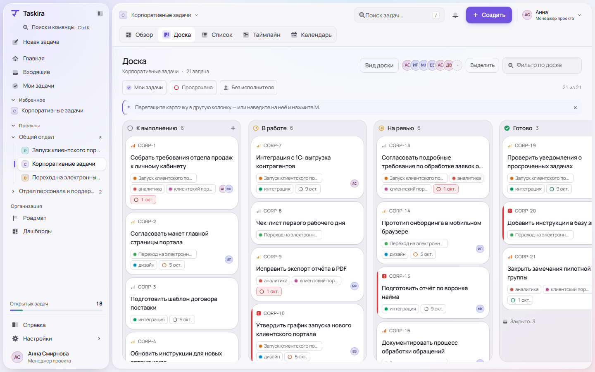
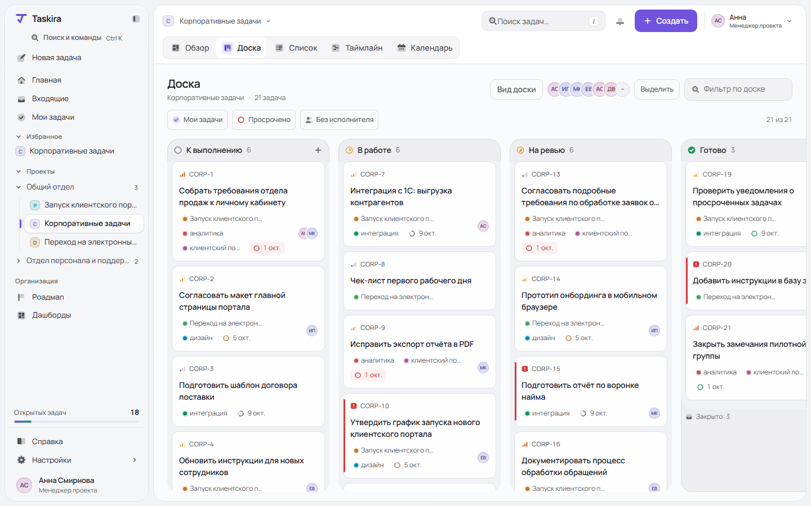
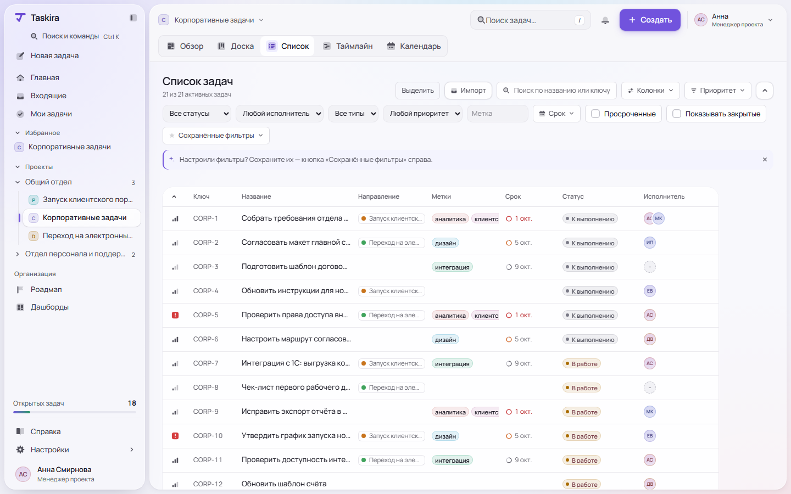
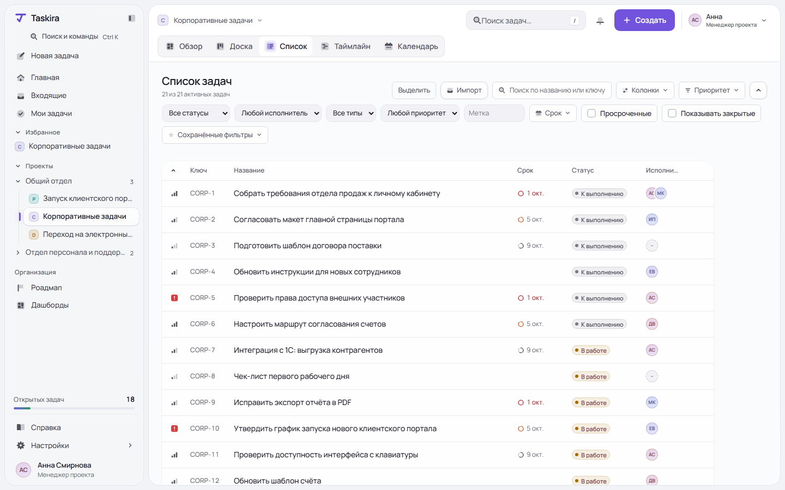
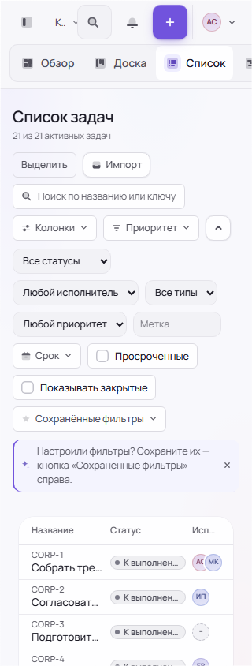
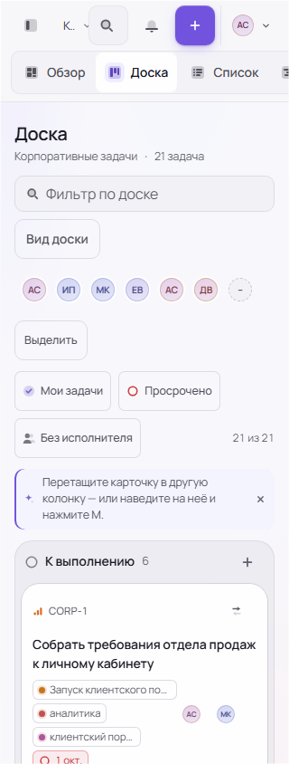
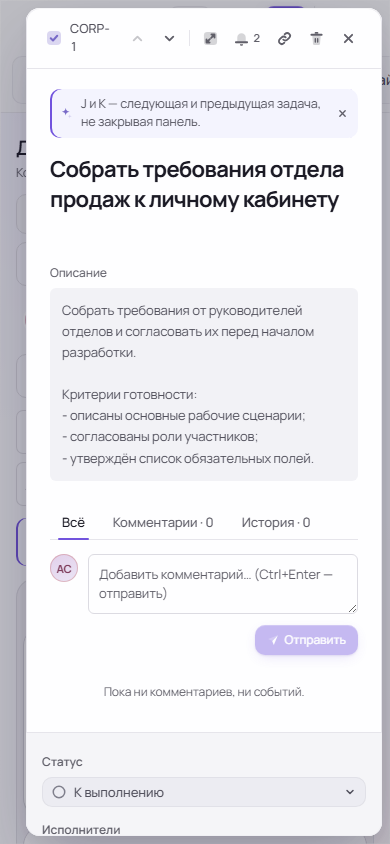
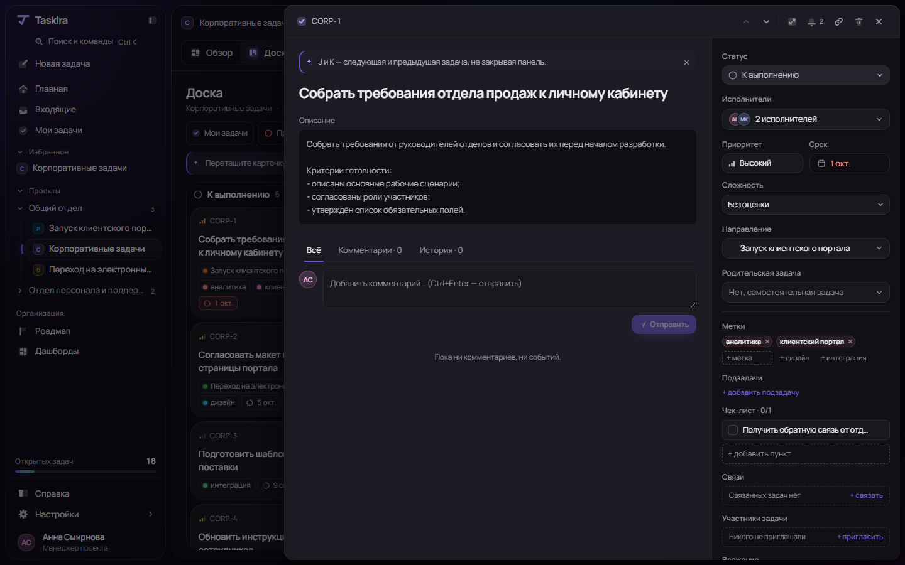

Хорошая основа.
Интерфейсу нужна согласованность.
Сохранить собственную библиотеку компонентов. Исправить сбои взаимодействий, отдать больше места названиям задач и снизить визуальный вес оформления.
Полный отчёт: доказательства, исходники, критерии исправления →Приоритетных пунктов
Пять дефектов P1, восемь улучшений P2, один пункт семантики P3. Приоритеты — экспертная оценка риска.
Скриншотов
Светлая и тёмная темы, узкие экраны, пустые состояния и два визуальных эксперимента.
Успешных тестов
26 компонентных и 9 браузерных. На реальных формах дополнительно обнаружены ошибки контраста.
Общий визуальный дизайн
Фирменный характер уже есть. Оформление контейнеров и метаданных часто конкурирует с задачами. В текущем списке название получает 200 px при ширине таблицы 1012 px; на телефоне 320 px — только 92 px.

Открыть исходный скриншот

Открыть эксперимент в полном размере

Открыть исходный скриншот

Открыть эксперимент в полном размере
Эксперименты сделаны временными стилями страницы. Код приложения не изменён. Это направление для обсуждения, без исправления мобильной компоновки и без полного тестирования взаимодействий. Скрытые в примере метки и направления предлагается оставить опциональными колонками.
Что исправлять
Воспроизводимые дефекты и дизайнерские гипотезы отмечены отдельно. Каждый пункт полного отчёта содержит доказательство, рекомендацию и критерий принятия.
Показано 14 из 14
Мобильные сценарии и тёмная тема








Последовательность работы
Надёжность
Черновики, актуальность поиска, открытие задач с клавиатуры, контраст форм и доступность действий таблицы.
Содержимое и компоновка
Ширина названий, мобильные фильтры, перенос условий между видами, плотность и порядок свойств задачи.
Цельный визуальный язык
На доске и списке согласовать поверхности, типографику и метаданные. Затем применить правила к остальным экранам.
Собственная библиотека или UI-кит?
Сохранить DS и расширить проверку реального применения. Токены, темы и нативные поверхности — хорошая основа. Но равенство зрелым UI-китам не доказано: найден дефект асинхронного выбора, размеры применяются неравномерно, семантика и адаптивные экраны требуют доведения.
Замена библиотеки не решит распределение места в таблице, порядок свойств на телефоне или сохранение рабочего набора между представлениями. Конкретный сложный компонент можно сравнить со сторонней основой отдельно.